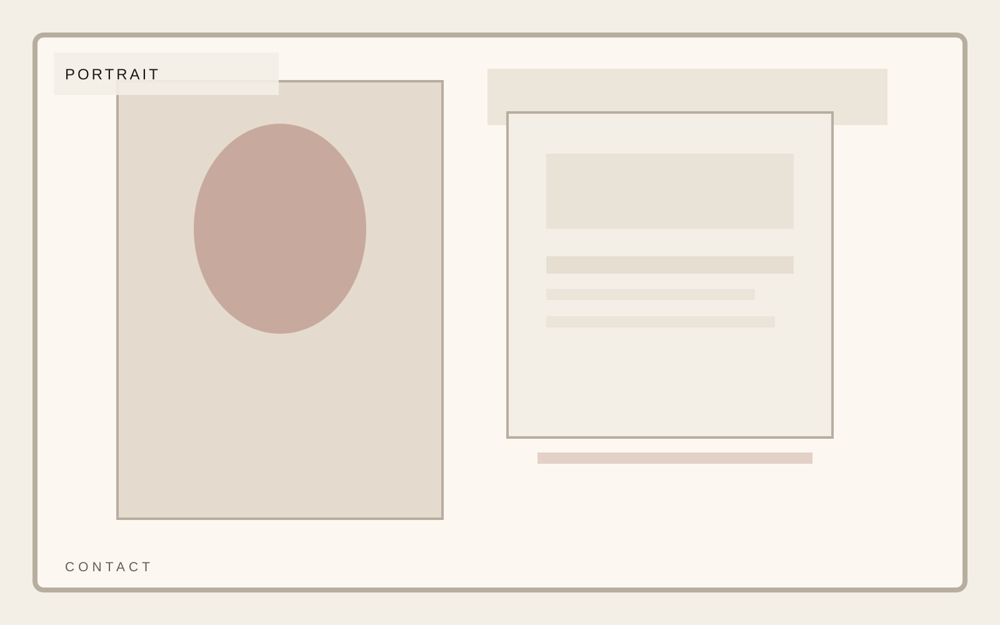

Work mode
Hands-on strategic operator
Independent consultancy
Clarity is a design problem before it is an operating problem.
A consultancy template that prioritizes argument, proof, and a premium reading experience over bloated agency-site patterns. Direct, credible, and intentionally spare.
Independent consultancy
Merit shapes contact as argument, evidence, and clarity of offer, keeping the reading experience spare, premium, and direct. This contact page stays consistent with the template system while giving this section its own visual weight.
